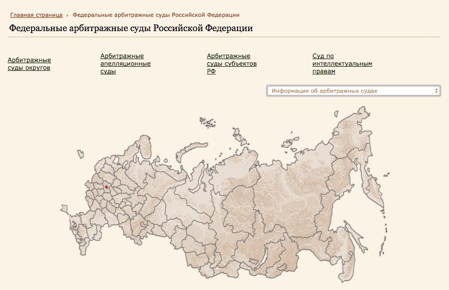
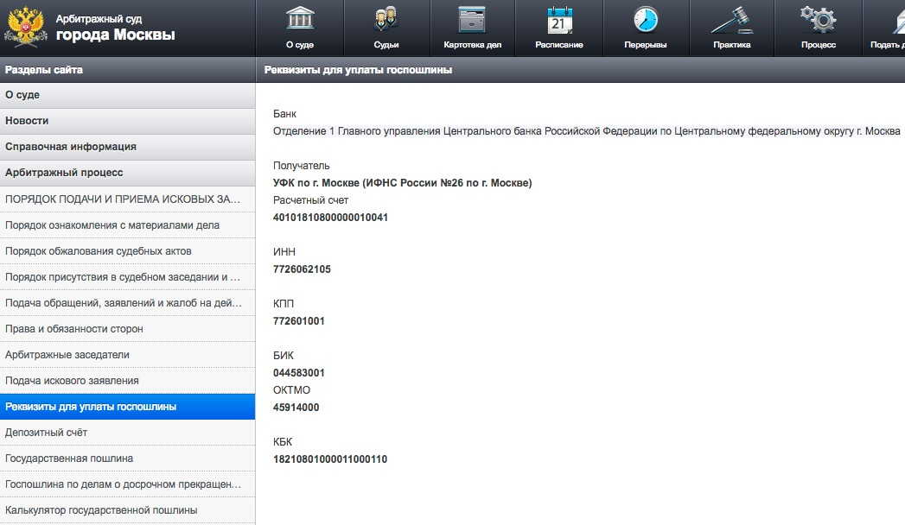
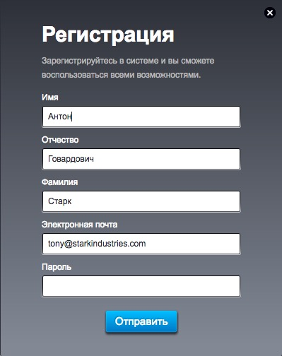
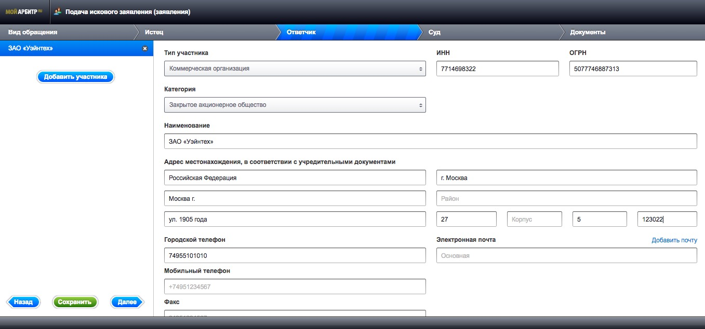
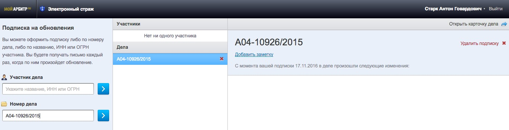

Вы поставили товар в Россию, а клиент вам не заплатил. Рассказываем, как использовать судебную систему России в своих интересах. Начните по-хорошему — предъявите претензию. Факт основательного отношения к вопросу может заставить должника заплатить. Если это не сработало, действуйте по-другому.
Выберите арбитражный суд по месту нахождения или жительства ответчика. Если ответчик находится в Москве, обращайтесь в Арбитражный суд Москвы. Если в Смоленске — Смоленской области, если в Краснодаре — Краснодарского края.
Сайт арбитражных судов РФ поможет с поиском.
Сумма зависит от цены иска в российских рублях. Например, если цена иска меньше 10 тыс. — госпошлина составит 3% от цены иска. Если свыше 1 млн. рублей —13 тыс. 300 руб. + 0,5% от суммы свыше 1 млн рублей. Резидент Беларуси должен уплатить пошлину в российских рублях. В цену иска включаются указанные в нем суммы неустойки (штрафов, пеней) и проценты.
Реквизиты для оплаты возьмите на сайте суда, в примере — Москва
Перечислите участников, опишите свои требования и подтвердите их документами. Мы отметили соответствующие места для примера в документе ниже. Дополнительно приложите копии документов о компании: устав, свидетельство о регистрации и подтверждение полномочий на подписание иска. Копии всех документов отправьте вашему должнику с уведомлением.
В иске должны быть указаны:
К иску прилагаются:
Скачайте шаблон на сайте суда.
Заполните короткую форму. Откройте электронную почту и перейдите по ссылке, чтобы активировать учетную запись.
Проще, чем одноклассники.
Используйте логин и пароль для входа в сервис «Мой арбитр». В блоке Заявления и жалобы выберите Иск (Заявление). На следующем шаге выбирите Исковое заявление, заявление по корпоративному спору. Заполните формы и прикрепите документы, которые вы подготовили ранее.
После ввода ИНН или ОГРН форма может заполниться автоматически.
Суд потратит до трех месяцев на принятие решения. Оно вступит в силу через месяц после принятия, если не подана апелляция. Срок рассмотрения достигает полугода, если дело сложное, например участвуют несколько сторон.
В отправке сообщений на электронную почту бывают сбои. Если долго нет новостей, проверьте информацию в личном кабинете.
Номер дела придет вам электронным письмом, после подачи документов.
В новых договорах формулируйте условия о порядке разрешения споров с учетом своих интересов. Например, добавьте такой абзац: «Все споры и разногласия по настоящему договору подлежат рассмотрению в экономическом суде г. Минска.»